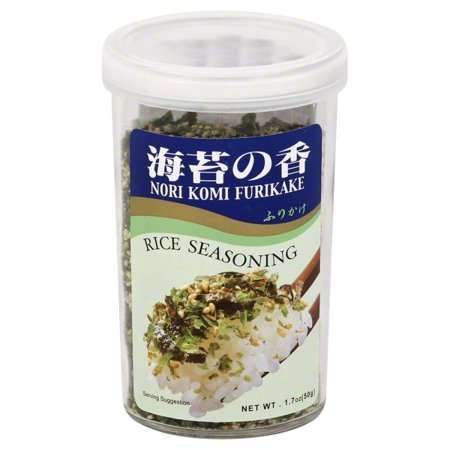

tasty miso
tastier than thou
- very very simple you get your miso (i like shiro miso
 , the white stuff, cause it's creamy but you can also use red miso), bonito dashi
, the white stuff, cause it's creamy but you can also use red miso), bonito dashi , heat in a pan with some wakame seaweed
, heat in a pan with some wakame seaweed
 , sesame oil
, sesame oil on top, chopped spring onions. add some noodles and make it a meal! (see title picture for example)
on top, chopped spring onions. add some noodles and make it a meal! (see title picture for example)this makes a great breakfast, or a wholesome packed lunch, with white rice, tinned fish, furikake and umeboshi